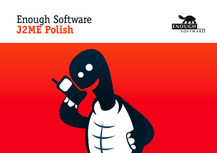

<%define inIntroductionSection %>
<%set title = J2ME Polish: Documentation %>
<%set basedir = ../ %>
<%include start.txt %>
Introduction
J2ME Polish is quite a powerful tool, but don't worry: it's easy to use!
J2ME Polish is a suite of tools and technologies aimed at mobile developers and companies within the mobile space.
Main features of J2ME Polish include:
- Lush: A UI toolkit that is highly flexible and that can be designed outside of the application's source code.
- Janus: A toolset for porting mobile application to different handsets and different technology platforms.
- Touch: Technology for accessing server side content and communicating with remote parties.
- Trunk: A persistence solution that allows you to load and save conplex data with a single line of code.
- Marjory: Our community maintained device database.

<%include end.txt %>